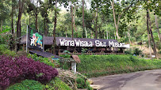

Setiap keindahan alam selalu memiliki arti untuk diabadikan, dinikmati, dan dikenang.

RUMAH MAKANOase hijau di tengah kota dengan danau alam yang tenang dan pulau kecil di tengahnya. Destinasi sejuk yang ideal untuk jalan-jalan santai, spot foto jembatan gantung, dan rekreasi keluarga.
Perpaduan agrowisata dan keindahan perbukitan hijau. Destinasi edukatif yang menawarkan suasana pedesaan menyejukkan dan spot foto yang estetik.
Spot terbaik menikmati lanskap Kota Banjar dari ketinggian. Tempat favorit untuk berburu sunset, berkemah, dan menikmati gemerlap lampu kota di malam hari.